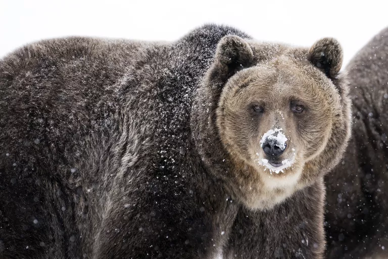
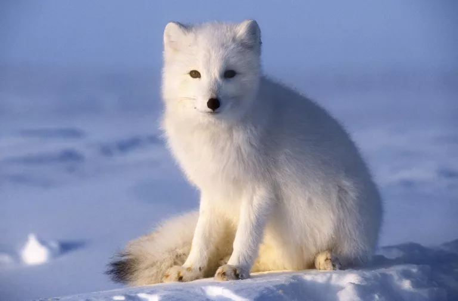
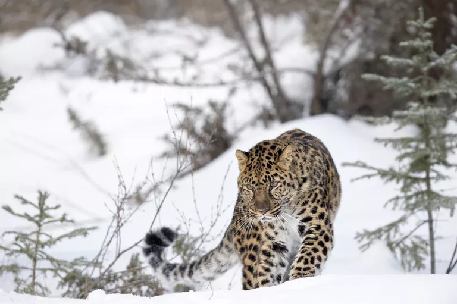

Grizzly Bear

The grizzly bear (Ursus arctos horribilis) is a subspecies of brown bear found in North America. While all grizzlies are brown bears, not all brown bears are grizzlies. According to some specialists, the grizzly bear lives inland, while the North American brown bear lives on the coast due to its reliance on food sources like salmon. Meanwhile, the Kodiac brown bear lives in the Kodiac Archipelago of Alaska.
While habitat affects their appearance and behavior, there is no genetic difference between these bears. Thus, most scientists simply refer to any brown bear living in North America as a "North American brown bear."
Brown bears are easily distinguished from black bears by their large muscular shoulder hump, short ears, and rump that is lower than the shoulders. Because they eat a lower protein diet, grizzly bears tend to be smaller than coastal brown bears, but they are still very large. The average female weighs between 130 and 180 kg (290 to 400 lb), while males typically weigh between 180 and 360 kg (400 to 790 lb).
Grizzly bears range in color from blond to black. Most bears are brown with darker legs and gray or blond tipped hairs on their back and flanks. Their long claws are well-adapted to digging. Lewis and Clark described the bear as grisley, which could have referred to the grizzled appearance of the bear's gray-or-gold-tipped fur, or to the gruesome ferocity of the animal.
Arctic Fox

The arctic fox (Vulpes lagopus) is a small fox known for its luxurious fur and entertaining hunting antics. Photographs of the fox usually show it with a white winter coat, but the animal may be a different color depending on genetics and season.
The scientific name Vulpes lagopus translates to "fox hare-foot," which refers to the fact that the arctic fox's paw resembles a rabbit's foot. It is the only canid whose foot pads are completely insulated by fur.
Arctic foxes are about the size of a house cat, averaging about 55 cm (male) to 52 cm (female) in height, with a 30 cm tail. The fox's weight depends on the season. In the summer, a fox puts on fat to help it survive the winter, essentially doubling its weight. Males range from 3.2 to 9.4 kg, while females weigh from 1.4 to 3.2 kg.
The arctic fox has a low surface area to volume ratio to protect it from the cold. It has a short muzzle and legs, compact body, and short, thick ears. When the temperature is warm, an arctic fox radiates heat through its nose.
There are two arctic fox color morphs. The blue fox is a morph that appears dark blue, brown, or gray year-round. Blue foxes live is coastal regions where their fur serves as camouflage against the rocks. The white morph has a brown coat with gray abdomen in the summer and white coat in the winter. The color change helps the fox blend in with its surroundings to avoid predators.
Amur Leopard

The Far Eastern or Amur leopard (Panthera pardus orientalis) is one of the world's most endangered cats. It is a solitary, nocturnal leopard with a wild population estimated at over 84 individuals who mostly reside in the Amur River basin of eastern Russia with a few scattered in neighboring China and in a relatively new refuge established in 2012. They are particularly vulnerable to extinction because Amur leopards have the lowest levels of genetic variation of any leopard subspecies.
The Amur leopard is a subspecies of leopard with a thick coat of long, dense hair varying in color from creamy yellow to rusty orange, depending on their habitat. Amur leopards in the snowier Amur River Basin of Russia develop lighter coats in the winter and tend to have more cream-colored coats than their Chinese kin. Their rosettes (spots) are more widely spaced with thicker black borders than other subspecies of leopards. They also have larger legs and wider paws than other subspecies, an adaptation that facilitates movement through deep snow.
Both males and females range in height between 25 to 31 inches at the shoulder and are typically 42 to 54 inches long. Their tales measure approximately 32 inches in length. Males are typically heavier at 70 to 110 pounds while females typically weigh 55 to 75 pounds.